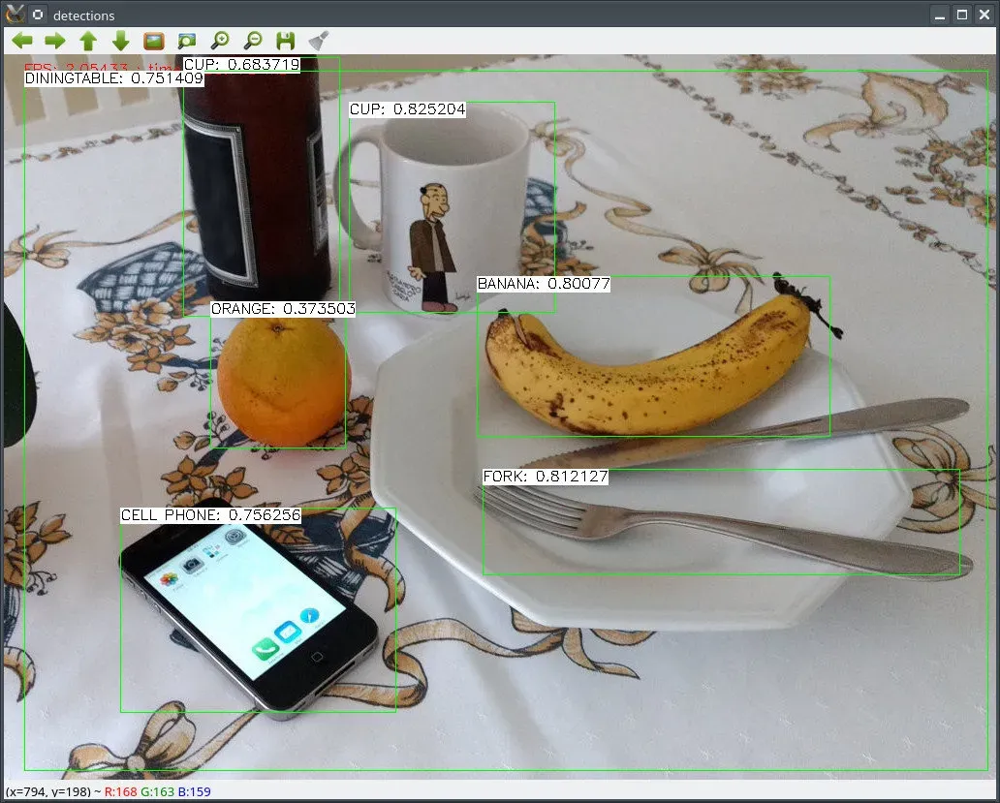
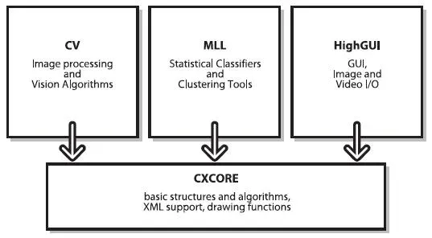
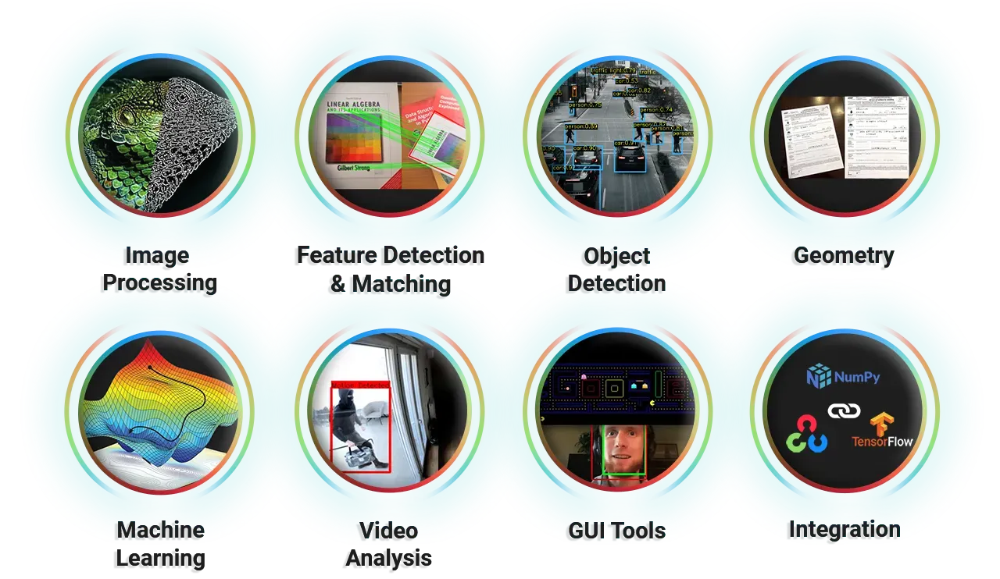
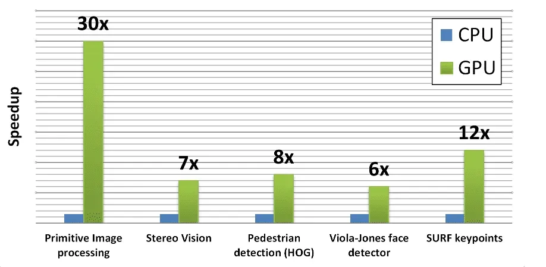

Learn Computer Vision with OpenCV in an easy, structured way
AI and computer vision make it possible for machines to understand images and videos as humans do. Innovations like autonomous vehicles, robotics, and advanced photo editing are beneficiaries of this technology. OpenCV is a leading open-source library for computer vision applications, and plays a vital role in providing tools for real-time image and video processing.
OpenCV boasts over 2500 algorithms, including classical ones like Support Vector Machines (SVMs) and K-Nearest Neighbors (KNN), and cutting-edge deep learning techniques. These algorithms help with tasks such as object detection, image segmentation, and facial recognition.
OpenCV, short for Open Source Computer Vision Library, is an essential toolkit for anyone working with computer vision and machine learning. It's open-source, which means anyone can use and tweak it, fitting for all sorts of projects, from big companies like Google to smaller startups and academic research.
OpenCV is packed with algorithms that help with everything from recognizing objects to tracking their movement and even creating 3D models. It's incredibly popular, with a huge community of over 47,000 users and more than 18 million downloads.
OpenCV's architecture is designed to handle a wide range of computer vision and machine learning applications. It is built around a core component, CXCore, which includes its main functions and algorithms. This setup minimizes redundancy and boosts efficiency.
The OpenCV Library has a suite of over 2500 optimized algorithms. These enable tasks like classification, detection, segmentation, feature extraction, and handwriting recognition.
Development started in 1999 at Intel Research Labs, created by Gary Bradski. The first public release was in 2000, version 1.0. Over the years, OpenCV added GPU acceleration, Python bindings, deep learning modules, and support for modern platforms.
OpenCV integrates tools like CUDA and OpenCL to accelerate data processing. This enables faster real-time applications such as surveillance and robotics.
Used in image matching, object tracking, AR, and scene reconstruction.
Helps in gaming, VR, and human-computer interaction.
Applied in surveillance, robotics, and autonomous vehicles.
Quick demo code for detecting Objects using OpenCV:
from imutils.video import VideoStream
from imutils.video import FPS
import numpy as np
import argparse
import imutils
import time
import cv2
ap = argparse.ArgumentParser()
ap.add_argument("-p", "--prototxt", required=True,
help="path to Caffe 'deploy' prototxt file")
ap.add_argument("-m", "--model", required=True,
help="path to Caffe pre-trained model")
ap.add_argument("-c", "--confidence", type=float, default=0.2,
help="minimum probability to filter weak predictions")
args = vars(ap.parse_args())
CLASSES = ["aeroplane", "background", "bicycle", "bird", "boat",
"bottle", "bus", "car", "cat", "chair", "cow", "diningtable",
"dog", "horse", "motorbike", "person", "pottedplant", "sheep",
"sofa", "train", "tvmonitor"]
COLORS = np.random.uniform(0, 255, size=(len(CLASSES), 3))
print("[INFO] loading model...")
net = cv2.dnn.readNetFromCaffe(args["prototxt"], args["model"])
print("[INFO] starting video stream...")
vs = VideoStream(src=0).start()
time.sleep(2.0)
fps = FPS().start()
while True:
frame = vs.read()
frame = imutils.resize(frame, width=400)
(h, w) = frame.shape[:2]
resized_image = cv2.resize(frame, (300, 300))
blob = cv2.dnn.blobFromImage(resized_image, (1/127.5), (300, 300), 127.5, swapRB=True)
net.setInput(blob)
predictions = net.forward()
for i in np.arange(0, predictions.shape[2]):
confidence = predictions[0, 0, i, 2]
if confidence > args["confidence"]:
idx = int(predictions[0, 0, i, 1])
box = predictions[0, 0, i, 3:7] * np.array([w, h, w, h])
(startX, startY, endX, endY) = box.astype("int")
label = "{}: {:.2f}%".format(CLASSES[idx], confidence * 100)
print("Object detected: ", label)
cv2.rectangle(frame, (startX, startY), (endX, endY), COLORS[idx], 2)
y = startY - 15 if startY - 15 > 15 else startY + 15
cv2.putText(frame, label, (startX, y), cv2.FONT_HERSHEY_SIMPLEX, 0.5, COLORS[idx], 2)
cv2.imshow("Frame", frame)
key = cv2.waitKey(1) & 0xFF
if key == ord("q"):
break
fps.update()
fps.stop()
print("[INFO] Elapsed Time: {:.2f}".format(fps.elapsed()))
print("[INFO] Approximate FPS: {:.2f}".format(fps.fps()))
cv2.destroyAllWindows()
vs.stop()
The future of OpenCV is exciting with edge computing, IoT integration, and privacy-preserving techniques. It will continue to shape industries like AR, robotics, and healthcare.
OpenCV has come a long way since 1999. With its adaptability and innovation, OpenCV continues to empower developers and researchers to push the boundaries of computer vision.